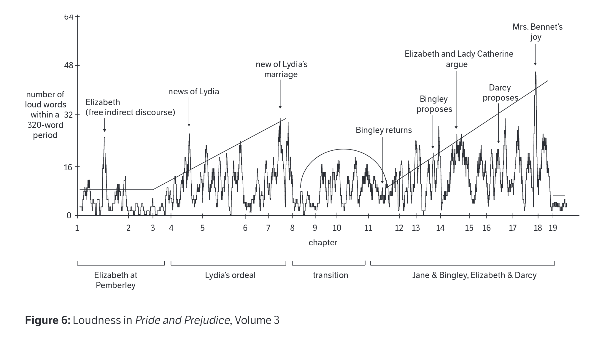
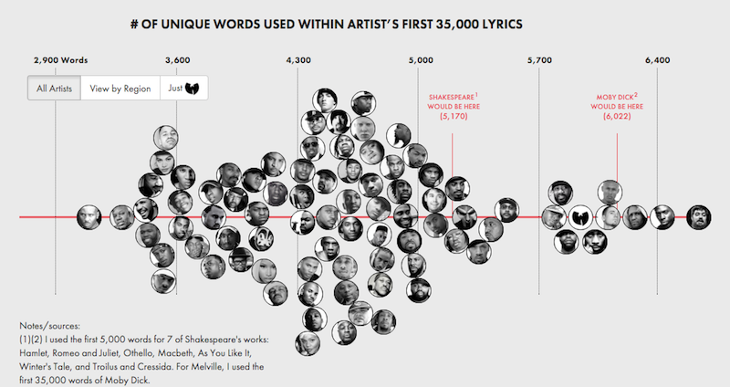
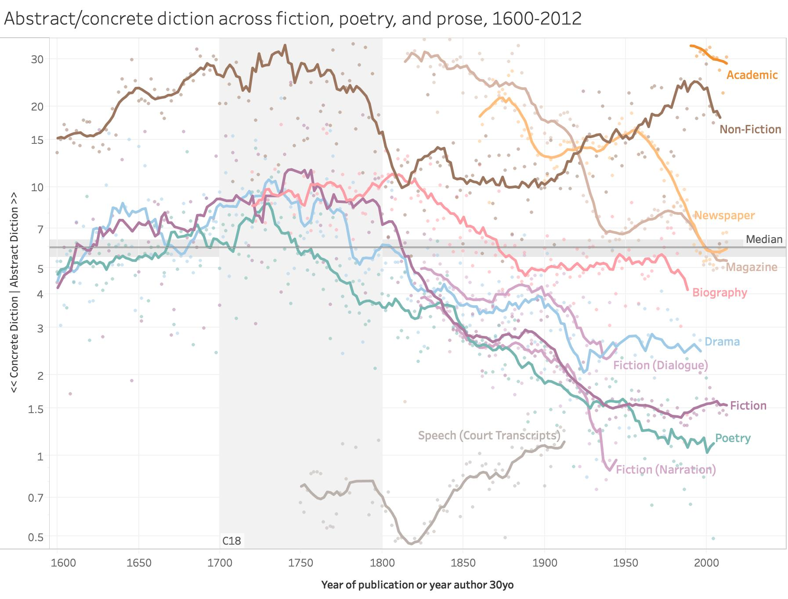

Introduction to Computational Literary Analysis
Jonathan Reeve
6 July 2021
Introduction to Computational Literary Analysis
Info
- Digital Humanities Program, UC-Berkeley
- Summers since 2018, also at Columbia U
- Online only (this summer)
General Information
Instructor: Jonathan Reeve
- PhD student, researcher, instructor
- Department of English and Comparative Literature, Columbia University
- http://jonreeve.com
Course
- Course website: http://icla2021.jonreeve.com
- Text-based course communication (!)
- Zoom-free zone
Computational Literary Analysis
An Exciting New Field
Also known as, or similar to: text analysis, cultural analytics, digital humanities, “distant reading”
Reading Books with Computers
Famous Examples
Game of Thrones

Loudness

Rap Lyrics

Abstract/Concrete

But why?
Why computers?
- Procedures help us to learn.
- New way of reading
Why literature?
- Text analysis is general-purpose
- Literature is complex language
- Also, literature is awesome.
The Great Unread
Prerequisites
No prerequisites
- Programming is like explaining how to make a peanut butter and jelly sandwich to a four-year-old.
Like Making a Sandwich
A sandwich?
- Describe a process procedurally
- Break a procedure into steps
Programming language
Pep talk
- It’s not true that some people are better suited to coding.
- You can do it!
Links
Syllabus
https://icla2020b.jonreeve.com